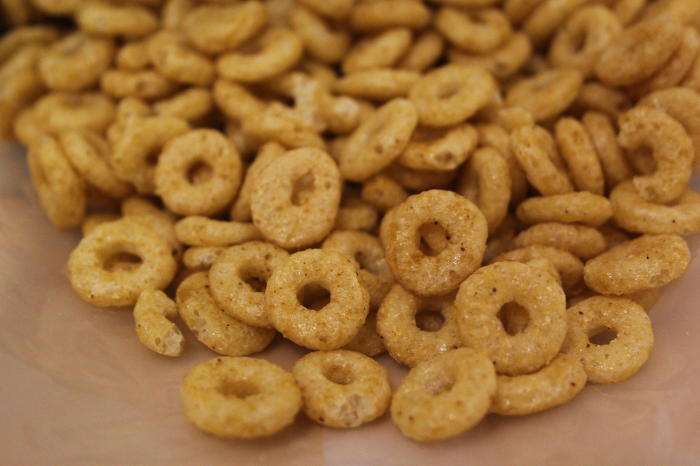

NUTRITION FACTS
ABOUT
INGREDIENTS
VITAMINS AND MINERALS
EXTRA
Trader Joes: Joe O's!

Fortified with Six B Vitamins
Including 50% DV Folic Acid
1 Gram of Sugar
Per Serving
Toasted Whole Grain Oats Cereal
Net WT. 15 OZ (425g)
Serving Suggestions